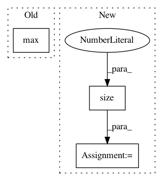

96d45ef50e3561a14465b15414bd3218e3320d52,torch_geometric/utils/to_dense_batch.py,,to_dense_batch,#Any#Any#Any#Any#,5
Before Change
num_nodes = scatter_add(batch.new_ones(x.size(0)), batch, dim=0,
dim_size=batch_size)
cum_nodes = torch.cat([batch.new_zeros(1), num_nodes.cumsum(dim=0)])
max_num_nodes = max(num_nodes.max().item(), desired_max_num_nodes)
idx = torch.arange(batch.size(0), dtype=torch.long, device=x.device)
idx = (idx - cum_nodes[batch]) + (batch * max_num_nodes)
After Change
return x.unsqueeze(0), mask
if batch is None:
batch = x.new_zeros(x.size(0), dtype=torch.long)
batch_size = batch[-1].item() + 1
num_nodes = scatter_add(batch.new_ones(x.size(0)), batch, dim=0,
dim_size=batch_size)
In pattern: SUPERPATTERN
Frequency: 3
Non-data size: 3
Instances
Project Name: rusty1s/pytorch_geometric
Commit Name: 96d45ef50e3561a14465b15414bd3218e3320d52
Time: 2020-05-29
Author: matthias.fey@tu-dortmund.de
File Name: torch_geometric/utils/to_dense_batch.py
Class Name:
Method Name: to_dense_batch
Project Name: rusty1s/pytorch_geometric
Commit Name: a8ad5f0067eee2ec1dfd353d8c97f7c926b05dad
Time: 2020-06-30
Author: matthias.fey@tu-dortmund.de
File Name: test/nn/conv/test_sg_conv.py
Class Name:
Method Name: test_sg_conv
Project Name: rusty1s/pytorch_geometric
Commit Name: b2002a8ef80ecbecee09fd61b910c987648455c7
Time: 2020-08-26
Author: matthias.fey@tu-dortmund.de
File Name: torch_geometric/datasets/karate.py
Class Name: KarateClub
Method Name: __init__